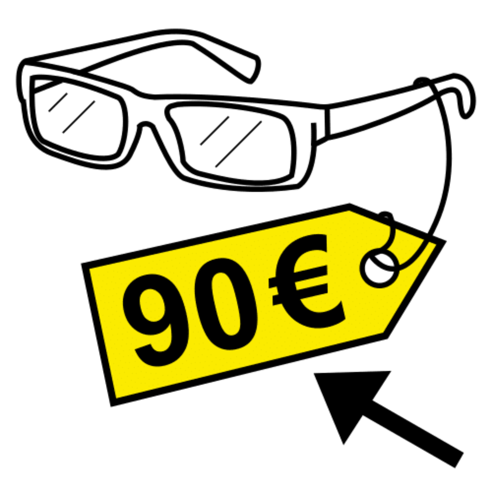
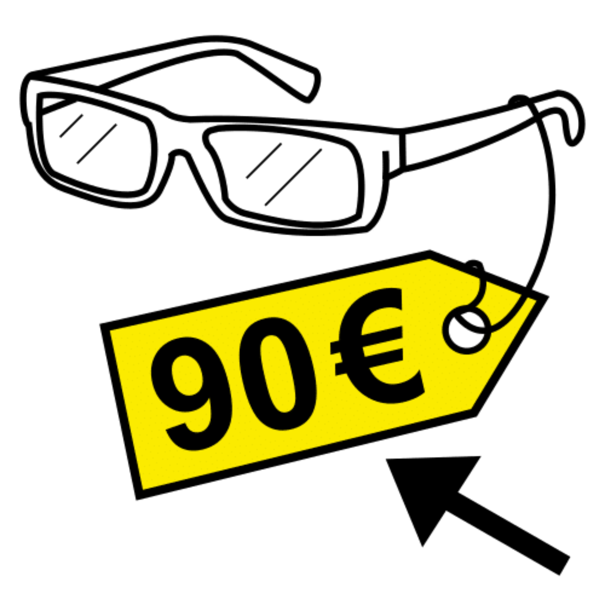
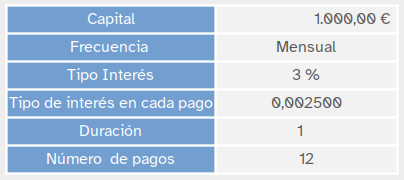
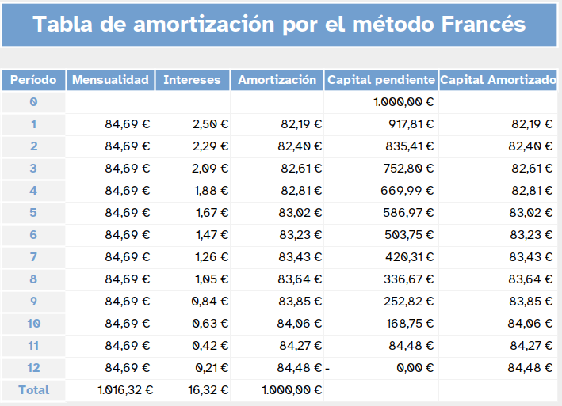
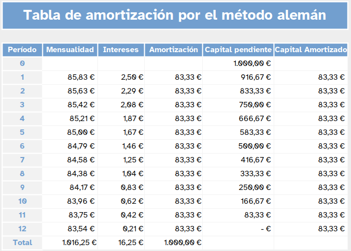

Diccionario
Costes



Vamos a comenzar a aprender diferentes contenidos matemáticos que se aplican en economía.
Ya has aprendido el cálculo del interés simple y del interés compuesto, cuándo se usan y en qué se diferencian.Es el momento de abordar un aspecto fundamental que muchos de vosotros vais a tener que hacer en algún momento de vuestra vida, solicitar un préstamo.
Por ello, vamos a analizar los secretos de esta operación matemática. Es muy importante conocer los pormenores del sistema de préstamos porque ahí te juegas tu dinero.
La amortización del préstamo será la clave para superar con éxito el reto que te planteamos y puedes contestar si realmente te interesa pedir un préstamo o no.
Vamos a aprender diferentes contenidos matemáticos
que se aplican en economía.
Ya has aprendido el cálculo del interés simple
y del interés compuesto,
cuándo se usan y en qué se diferencian.
Es el momento de abordar un aspecto fundamental
que muchos de vosotros vais a tener que hacer
en algún momento de vuestra vida,
solicitar un préstamo.
Por ello, vamos a analizar los secretos
de esta operación matemática.
Es muy importante conocer los pormenores
del sistema de préstamos porque ahí te juegas tu dinero.
La amortización del préstamo será la clave
para superar con éxito el reto que te planteamos
y puedes contestar si realmente te interesa pedir un préstamo o no.
¿Qué es la TIN?
TIN significa tasa de interés nominal, y es el porcentaje de interés que cobra una entidad financiera al darte un préstamo o un crédito. La TIN no incluye otros gastos como comisiones o seguros que pueden estar combinados con otros productos financieros. Es decir, la TIN te muestra cuánto estás pagando realmente por el dinero prestado, sin extras adicionales.
¿Qué es la TAE?
TAE significa tasa anual equivalente, y es el porcentaje que va más allá de la TIN, porque también incluye otros costes asociados al producto financiero. La TAE muestra el coste total de dicho préstamo, incluyendo no solo los intereses, sino también comisiones, gastos de gestión y otros cargos administrativos repartidos durante la vida del préstamo o hipoteca. En otras palabras, te ayuda a ver el panorama completo de lo que realmente estás pagando anualmente por el préstamo.
Diferencias entre TIN y TAE
Saber qué es la TIN y la TAE te ayudará a tomar la decisión que más se ajusta a tus necesidades al momento de comparar entre varios instrumentos financieros. La principal diferencia entre ambos conceptos estriba en que el TIN no incluye ni las comisiones, ni los gastos. De ahí que, a la hora de comparar productos, la TAE sea un indicador más fiable y el que se utiliza normalmente.
¿QUÉ son el TIN y la TAE?
Seguro que te ha resultado curioso cómo saber, descubrir trabajan los bancos y otras empresas dedicadas a hacer préstamos.
Ahora te proponemos que te conviertas en economista y pongas en práctica todo lo aprendido en estos ejercicios
Vas a montar el cátering de tus sueños. Aunque , tienes unos ahorros, necesitas solicitar un préstamo bancario. Deberás investigar en línea diferentes bancos para encontrar la mejor opción de préstamo personal de 50.000 euros y comparar sus condiciones:
1. Investiga en la web: Debes buscar y comparar las ofertas de préstamos personales de 50,000 euros en al menos tres bancos diferentes. Para cada banco, deberás obtener la siguiente información:
Tipo de interés (TIN y TAE).
Comisiones y gastos adicionales.
Plazo del préstamo.
Requisitos para solicitarlo.
Condiciones de pago (mensuales, anuales, etc.).
Posibles ventajas o desventajas que presenta el banco con respecto a otros.
2. Comparación: Realiza una tabla comparativa en EXCEL donde expongas los aspectos clave de cada préstamo que has encontrado. Asegúrate de identificar cuál es la opción más económica para ti en función de los intereses, comisiones y condiciones de pago.
3. Conclusión: Después de la comparación, selecciona el banco que consideres que ofrece la mejor opción para ti y explica por qué lo elegiste. Justifica tu elección basándote en los aspectos financieros que has analizado.
Utilizar la herramienta CANVA para crear una presentación visual en la que incluyas las condiciones del préstamo elegido en el ejercicio anterior. Sigue los siguientes pasos:
Título: El nombre del préstamo y el banco elegido.
Resumen del préstamo: Incluir los aspectos clave como tipo de interés, comisiones, plazo, condiciones de pago, etc.
Ventajas y desventajas: donde muestres los puntos a favor y en contra de este préstamo.
Recomendación final: Realiza de manera visual, por qué este préstamo es la mejor opción para ti (por ejemplo, usando gráficos de barras comparando tasas de interés, comisiones y plazos).
Diseña tu presentación: Usa imágenes, iconos y gráficos para hacer la presentación atractiva.
¿Has hablado contigo mismo para resolver esta actividad?
No, no es raro. Es muy frecuente que cuando estamos trabajando hablemos en silencio con nosotros mismos. Es una forma de comprender mejor lo que hacemos y de buscar soluciones a las tareas o actividades.
De hecho, te aconsejo que lo hagas con muchas frecuencia porque te ayudará a:
- Recordar algunos pasos que necesites para realizar la actividad.
- Hacerte preguntas para entender mejor la información.
- Animarte a terminar la actividad, mantenerte concentrado...
- Saber cómo te sientes ante la actividad.
Habla contigo mismo y aprenderás mejor.
Son muchas la situaciones en las que una persona necesita capital para poder hacer algo y no dispone de él: comprar un coche, realizar un viaje, montar un negocio...
Aunque tal vez el caso más común sea la compra de una vivienda.
Esta es una de las inversiones más importantes o la más importante que realiza una persona y por lo general no se dispone de dinero para hacerla.
Hay que recurrir a quien tenga y quiera prestarlo y esto es lo que hacen los bancos.
Un banco deja el dinero necesario a quien lo necesita, a cambio se le devuelve poco a poco, percibiendo un pago por dejar ese dinero que son los intereses.
Tipo de interés nominal (TIN)
Cuando se pide un préstamo a un banco éste cobra un porcentaje por prestar ese dinero, eso es el Tipo de Interés Nominal.
Si se solicita un préstamo de 1000€ a un banco y éste cobra un TIN del 5% anual en un solo pago, al cabo del año se pagarán 1000+ 5% de 1000=1000+50=1050€.
El TIN indica el coste efectivo de un crédito
Tasa anual equivalente (TAE)
La tasa anual equivalente tiene en cuenta para su cálculo los costes en los que se incurre en un préstamo: TIN, comisiones y gastos.
Esto permite comparar de forma homogénea distintas propuestas de préstamo en las que pueden variar las comisiones, los gastos o el TIN.
Calculo de la TAE
$TAE=\left(1+\dfrac{r}{f}\right)^f-1$
Ejemplos:
Cuando se pide un préstamo hay que tener en cuenta varios factores, los más importantes son: el capital, el interés y el tiempo.
A partir de esos factores se determina una cuota que es la que se paga, normalmente, cada mes.
El método de cálculo de las cuotas a pagar más común es España es el francés, consiste en pagar cuotas constantes durante toda la vida del préstamo.
Como el interés se paga en función del capital pendiente, inicialmente en las cuotas se paga mucho interés y se amortiza poco capital con el paso del tiempo aumenta el capital amortizado y disminuyen los intereses.
Veamos un ejemplo:
Supongamos que se pide un préstamo de 1000€ a pagar en un año,
las cuotas para devolver el préstamo serán mensuales,
por tanto habrá 12 cuotas y con un tipo de interés del 3%.
Si consideramos la tabla de amortización del préstamo.

Se puede observar que las cuotas son constantes 84,69€,
cada cuota se compone de dos elementos intereses y capital amortizado.
Cada vez que se paga una cuota, se amortiza una parte de capital,
así por ejemplo cuando se realiza el pago de la primera cuota se amortizan 82,19€,
si se habían pedido 1000€ quedan por pagar 917,81€.
Para la segunda cuota se calcularán los intereses sobre el capital pendiente de pago 917,81€,
como la cuota es constante los intereses se calculan sobre un menor capital
se pagarán menos intereses y se amortizará más capital,
por eso en la segunda cuota el interés es 2,29€ y el capital que se amortiza 82,40€.
Observa cómo en cada cuota disminuyen los intereses y aumenta el capital que se amortiza.
¿Con qué fórmula se calcula la cuota de un préstamo con el método francés?
$Cuota=C_o \dfrac{i \cdot(1+i)^n}{(1+i)^n-1}$
Comprobemos con la fórmula la cuota del ejemplo anterior.
En nuestro caso $C_o=1000$, el tipo de interés es del 3% anual,
como se paga mensualmente el tipo de interés mensual será $ \dfrac{3}{12}=0,0025%$
y el número de periodos es 12.
$Cuota=1000 \dfrac{0,0025 \cdot(1+0,0025)^{12}}{(1+0,0025)^{12}-1} \simeq 84,69$
Veamos como se realiza una tabla de amortización como la que hay en el apartado anterior (método francés) utilizando los mismos datos.
$84,69 - 2,50=82,19$ esta es la cantidad que hay que restar al capital inicial $1000-82,19=917,21$ que es la cantidad pendiente de pago tras el primer pago.
El proceso se puede convertir en algo tedioso si se realiza a mano pero para ello tenemos las hojas de cálculo que nos facilitan el trabajo.
En la siguiente hoja de cálculo puedes ver la tabla de amortización
Este método de cálculo de la amortización del préstamo se caracteriza por amortizar cantidades constantes en cada cuota.
Esto lleva a tener cuotas iniciales altas que van disminuyendo según se va amortizando capital de modo que las cuotas finales son más pequeñas.
En comparación con el método francés al ser constante la amortización de capital,
se amortiza inicialmente más capital por lo que al final del préstamo se pagan menos intereses,
tiene el inconveniente de que las primeras cuotas son elevadas.
Veamos un ejemplo con los mismos datos que el método francés
Supongamos que se pide un préstamo de 1000€ a pagar en un año,
las cuotas para devolver el préstamo serán mensuales,
por tanto habrá 12 cuotas y con un tipo de interés del 3%.
Si consideramos la tabla de amortización del préstamo

Como se puede observar la cantidad que se amortiza siempre es la misma,
esto hace que las primeras cuotas sean más elevadas
y van disminuyendo según se va amortizando capital.
¿Cómo se realiza una tabla de amortización por el método alemán?
Se repite el proceso cada mes, como esta tarea repetitiva se puede recurrir a una hola de cálculo para realizar el cálculo.
Obra publicada con Licencia Creative Commons Reconocimiento No comercial Compartir igual 4.0